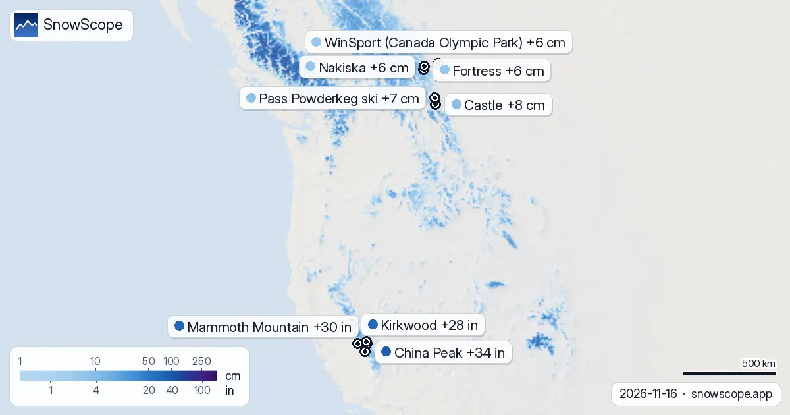

Orelle in testa alle previsioni neve a 72 ore: +103 cm (16 novembre)
Quanta neve guadagneranno le montagne? La nostra tabella mostra le località con più neve fresca prevista nelle prossime 24 ore e fino al 19 novembre, in Europa, Marocco e Nord America, con la quota neve. La neve in montagna è acqua trattenuta per la primavera: quello che cade ora alimenterà più tardi fiumi e invasi.
Le previsioni neve in tempo reale per Orelle nell'app SnowScopeAltezza neve, allerte powder e mappa 3D, gratis.
Europa e Marocco
Per Orelle (Francia) la previsione indica 41 cm nelle prossime 24 ore e 103 cm in 72 ore, con una quota neve vicina a 2.500 m. Les Grands Montets (Francia) dovrebbe ricevere 44 cm nelle prossime 24 ore e 100 cm entro 72 ore; la quota neve è vicino a 2.100 m. Per Courmayeur (Italia) la previsione indica 37 cm nelle prossime 24 ore e 100 cm in 72 ore, con una quota neve vicina a 2.300 m.
| # | Località | Regione | +24 h | +72 h | Quota neve |
|---|---|---|---|---|---|
| 1 | Orelle | Alpi · Francia | 41 cm | 103 cm | 2.500 m |
| 2 | Les Grands Montets | Alpi · Francia | 44 cm | 100 cm | 2.100 m |
| 3 | Courmayeur | Alpi · Italia | 37 cm | 100 cm | 2.300 m |
| 4 | La Grave | Alpi · Francia | 40 cm | 98 cm | 2.900 m |
| 5 | Les Arcs | Alpi · Francia | 39 cm | 96 cm | 2.000 m |
| 6 | La Thuile ski | Alpi · Francia / Italia | 40 cm | 95 cm | 2.100 m |
| 7 | Glacier 3000 | Alpi · Svizzera | 39 cm | 91 cm | 2.200 m |
| 8 | Valmorel | Alpi · Francia | 25 cm | 87 cm | 2.000 m |
| # | Località | Regione | +24 h | +72 h | Quota neve |
|---|---|---|---|---|---|
| 1 | China Peak | Ovest degli USA · Stati Uniti | 6 in (14 cm) | 34 in (86 cm) | 5.900 ft (1.800 m) |
| 2 | Mammoth Mountain | Ovest degli USA · Stati Uniti | 3 in (7 cm) | 30 in (77 cm) | 6.200 ft (1.900 m) |
| 3 | June Mountain | Ovest degli USA · Stati Uniti | 3 in (7 cm) | 30 in (75 cm) | 6.600 ft (2.000 m) |
| 4 | Badger Pass | Ovest degli USA · Stati Uniti | 3 in (7 cm) | 28 in (72 cm) | 5.600 ft (1.700 m) |
| 5 | Kirkwood | Ovest degli USA · Stati Uniti | 1 in (2 cm) | 28 in (70 cm) | 5.900 ft (1.800 m) |
| 6 | Kingvale | Ovest degli USA · Stati Uniti | 0 in (1 cm) | 27 in (69 cm) | – |
| 7 | Dodge Ridge | Ovest degli USA · Stati Uniti | 2 in (4 cm) | 27 in (68 cm) | 4.900 ft (1.500 m) |
| 8 | Bear Valley | Ovest degli USA · Stati Uniti | 1 in (3 cm) | 27 in (68 cm) | 5.600 ft (1.700 m) |
| # | Località | Regione | +24 h | +72 h | Quota neve |
|---|---|---|---|---|---|
| 1 | Castle | Canada occidentale · Canada | 3 cm | 8 cm | 1.400 m |
| 2 | Pass Powderkeg ski | Canada occidentale · Canada | 2 cm | 7 cm | 1.400 m |
| 3 | Fortress | Canada occidentale · Canada | 0 cm | 6 cm | 1.300 m |
| 4 | Nakiska | Canada occidentale · Canada | 0 cm | 6 cm | 1.400 m |
| 5 | WinSport (Canada Olympic Park) | Canada occidentale · Canada | 0 cm | 6 cm | 1.500 m |
| 6 | Fernie Alpine Resort | Canada occidentale · Canada | 2 cm | 4 cm | 1.200 m |
| 7 | Island Lake Cat Skiing | Canada occidentale · Canada | 2 cm | 4 cm | – |
| 8 | Panorama | Canada occidentale · Canada | 1 cm | 4 cm | 1.300 m |

Stati Uniti
China Peak (Stati Uniti) dovrebbe ricevere 6 in (14 cm) nelle prossime 24 ore e 34 in (86 cm) entro 72 ore; la quota neve è vicino a 5.900 ft (1.800 m). Per Mammoth Mountain (Stati Uniti) la previsione indica 3 in (7 cm) nelle prossime 24 ore e 30 in (77 cm) in 72 ore, con una quota neve vicina a 6.200 ft (1.900 m). June Mountain (Stati Uniti) dovrebbe ricevere 3 in (7 cm) nelle prossime 24 ore e 30 in (75 cm) entro 72 ore; la quota neve è vicino a 6.600 ft (2.000 m).
Canada
Per Castle (Canada) la previsione indica 3 cm nelle prossime 24 ore e 8 cm in 72 ore, con una quota neve vicina a 1.400 m. Pass Powderkeg ski (Canada) dovrebbe ricevere 2 cm nelle prossime 24 ore e 7 cm entro 72 ore; la quota neve è vicino a 1.400 m. Per Fortress (Canada) la previsione indica 0 cm nelle prossime 24 ore e 6 cm in 72 ore, con una quota neve vicina a 1.300 m.
I prossimi giorni nella previsione
Mettiamo la quota neve circa 300 m sotto lo zero termico previsto. Sopra, la neve fresca resta asciutta; sotto, neve bagnata o pioggia.
Una nota sulla misura: i valori delle località sono modellati per i pendii superiori, quelli delle stazioni misurati in un punto alla data indicata, ed entrambi hanno una certa incertezza.
Le previsioni a qualche giorno possono cambiare: ricontrolla la mappa il giorno prima di partire.
Consigli per sciatori
- Dopo una nevicata sii sul primo impianto: a mezzogiorno sole e sciatori hanno già cambiato la neve.
- Quando lo zero termico sale sopra la località, parte della neve fonde mentre cade: aspettati neve bagnata e resta vicino alla vetta.
- Prima del fuoripista o dello scialpinismo leggi il bollettino valanghe ufficiale (link qui sotto).
- Neve sulla mappa non significa località aperta: controlla impianti e date di apertura sul sito della località.
- Attiva un avviso powder nell'app SnowScope per sapere quando Orelle riceve neve fresca.
Su questi numeri
Le altezze neve delle località sono la neve più alta sui pendii superiori secondo il modello neve di SnowScope (circa 1 km, calcolo del 16 novembre); sono stime per un'area, non una misura in un punto. I valori delle stazioni sono misure alla data indicata. Le previsioni possono cambiare. Leggi sempre il bollettino valanghe ufficiale prima del fuoripista.
Bollettini valanghe ufficiali: EAWS (Europe) · avalanche.org (US) · Avalanche Canada
Cita questo articolo
Per ricerca, didattica o stampa: numeri e grafici sono liberamente riutilizzabili con licenza CC BY 4.0 citando così.
SnowScope (2026), Orelle in testa alle previsioni neve a 72 ore: +103 cm (16 novembre), https://snowscope.app/blog/it/2026/11/where-most-snow-falls-next-72-hours-16-november-2026.html, consultato il 2026-11-16
SnowScope (Atlas Labs). (2026, November 16). Orelle in testa alle previsioni neve a 72 ore: +103 cm (16 novembre). SnowScope snow reports. https://snowscope.app/blog/it/2026/11/where-most-snow-falls-next-72-hours-16-november-2026.html
BibTeX
@misc{snowscope2026wheremostsnowfallsnext72,
author = {{SnowScope (Atlas Labs)}},
title = {Orelle in testa alle previsioni neve a 72 ore: +103 cm (16 novembre)},
year = {2026},
month = nov,
howpublished = {\url{https://snowscope.app/blog/it/2026/11/where-most-snow-falls-next-72-hours-16-november-2026.html}},
note = {Published 2026-11-16 10:36 UTC; accessed 2026-11-16}
}· CC BY 4.0 · Metodi, dati e strumenti →
Orelle: neve e temperatura per quota, quest'inverno vs lo scorso (strumenti) →
Segui Orelle
Gratis: un messaggio quando arriva la neve e il meteo ogni mattina.
Altri bollettini neve

Oggi la neve più alta sulle Alpi è a La Grave (Francia), circa 97 cm sui pendii superiori. Poi viene Orelle con 81 cm, e Les Deux Alpes ha 78 cm. In …

Il riconoscitore di cime di SnowScope è un'app gratuita per riconoscere le montagne: punta il telefono verso i monti e ti dice il nome delle cime, con quota, distanza e tempo di salita. I nostri test: il 98 % delle cime che mostra è davvero in vista, e su foto reali ha corretto errori della bussola fino a 105° portandoli a 0,15°. Gratis con 3 nomi, tutte le cime con 0,99 € una sola volta.